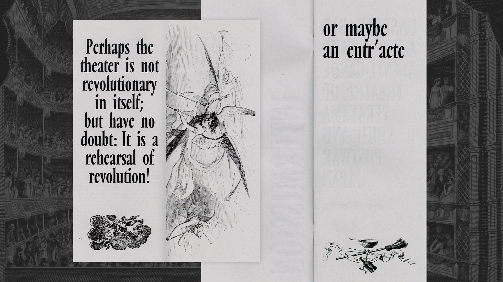
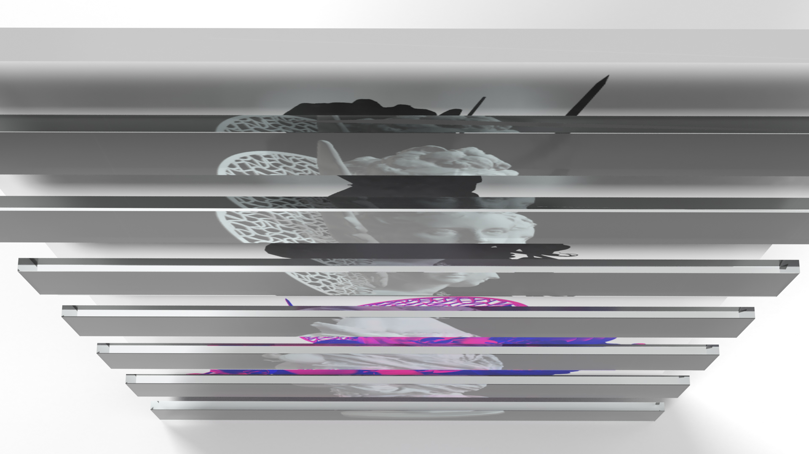
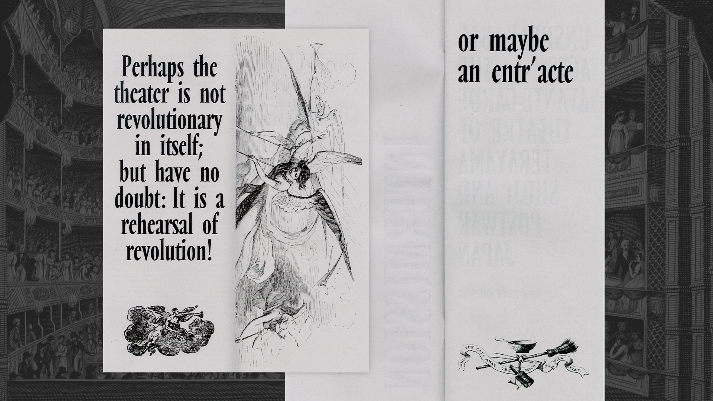
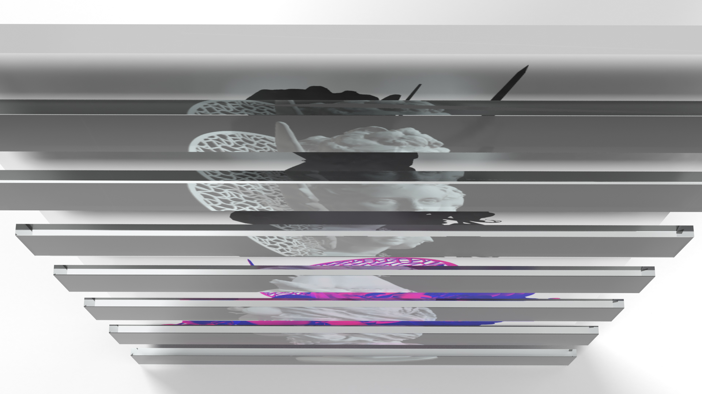
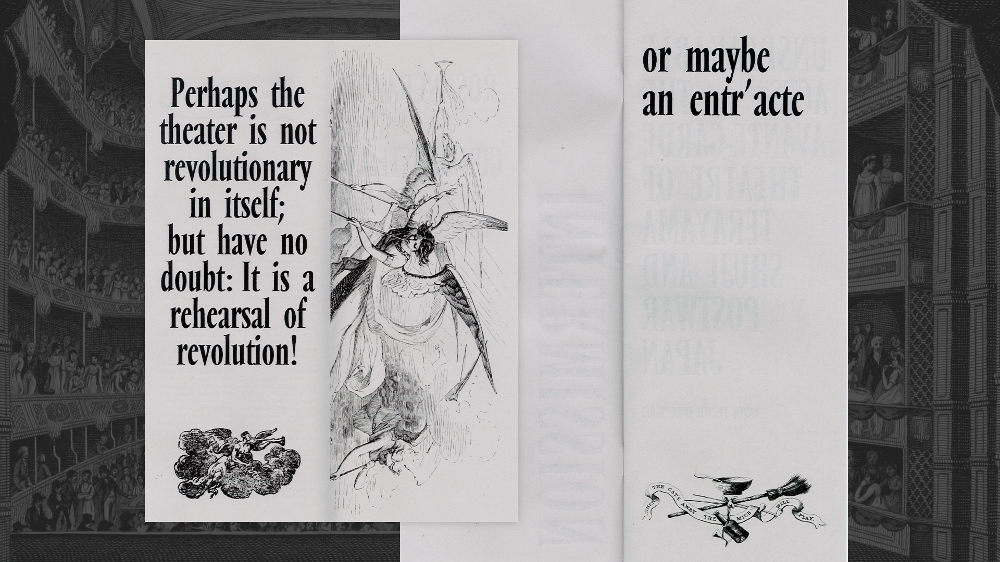
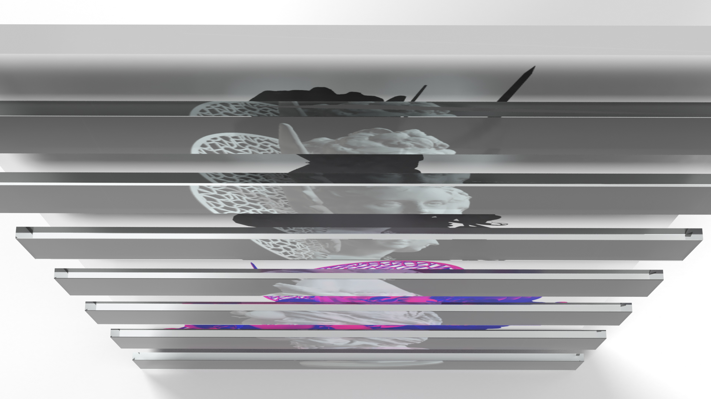
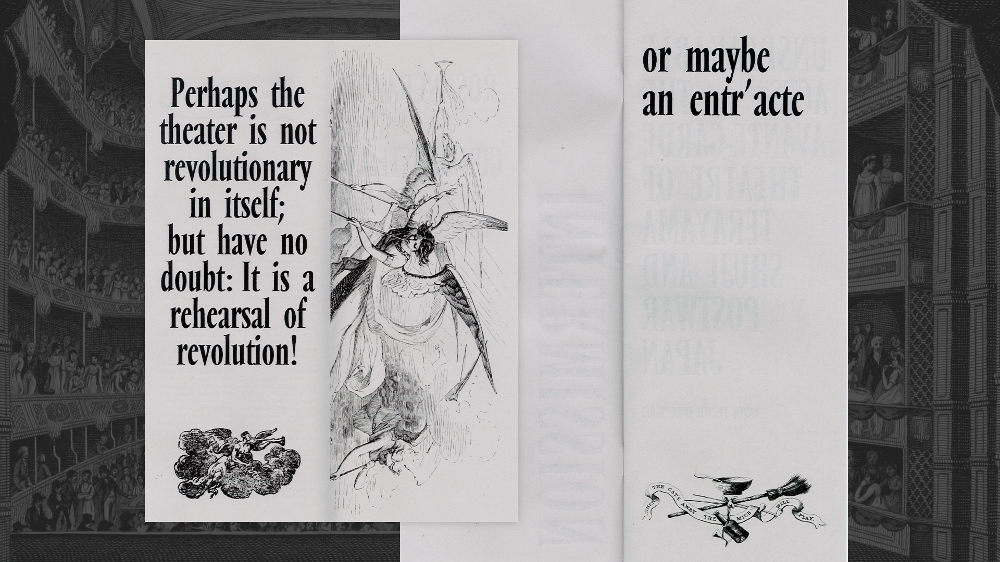
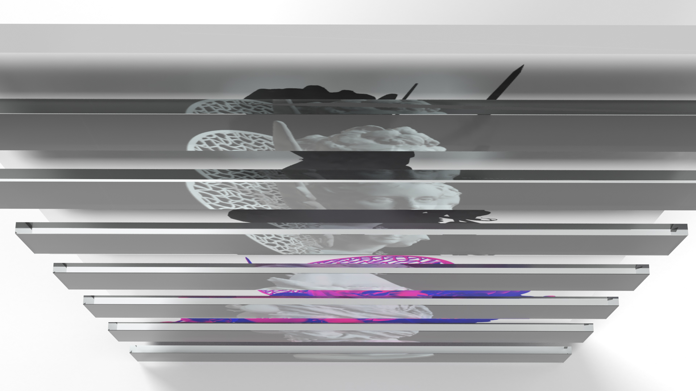

I'm a Graphic Design major at VCUarts and the VCU Honors College, branching into human-centered & visual design. I have a wealth of experience and have worn a couple different hats from print designer, freelance artist, illustrator, to web designer! And while I have spread my wings, I've always pushed towards success. I'm a WorldSkills USA National Champion for Graphic Design Technology, and my freelance designs have been bought by local and national organizations.
Outside of work I love experimental web, video games, and science fiction (right now I'm halfway through my Next Generation rewatch). I've written a guest article for examining design in fandom space, and have been interviewed by DBLTAP about diversity in the visual novel genre. I'm also part of the SpicyYeti coding community for introducing artists to building their own websites, as well as focusing on accessible and inclusive design practice.